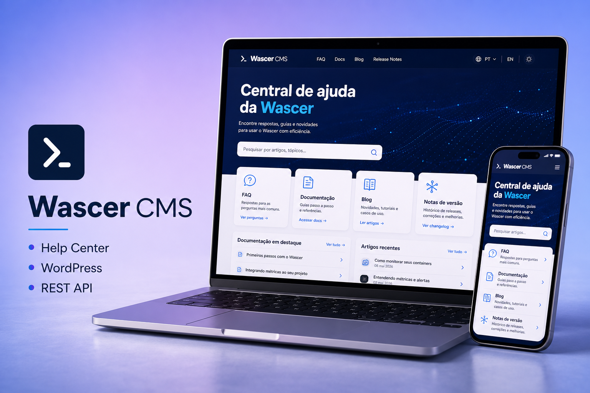
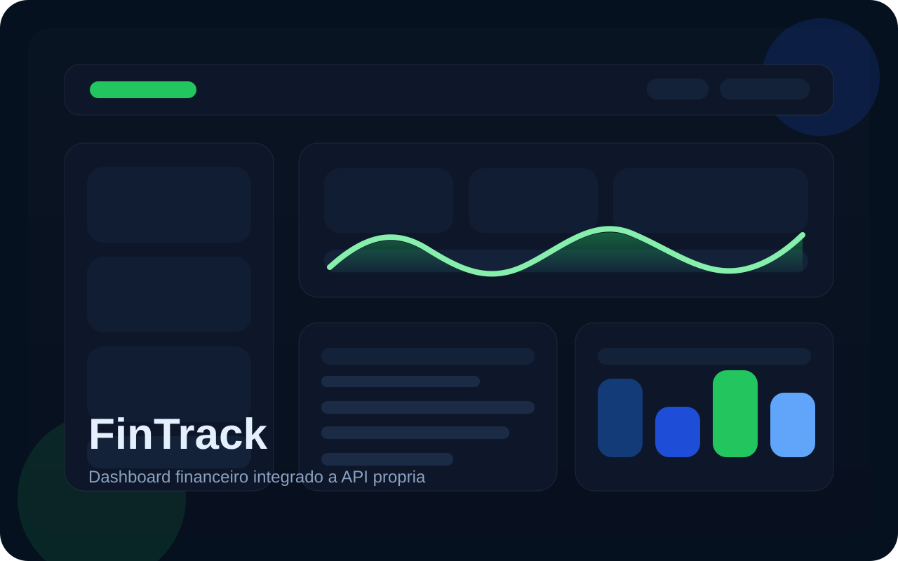

Experiência atual
Sourei
Atuação atual como desenvolvedor fullstack, integrado a projetos e produtos digitais em evolução.
Trabalho com JavaScript, TypeScript, Node.js, React e Next.js para criar interfaces, APIs REST, dashboards e produtos web com organização, validação, persistência de dados e base preparada para evolução.
Sou Full-Stack Developer com foco em JavaScript, TypeScript, Node.js, React e Next.js. Tenho construído projetos com API REST, autenticação, PostgreSQL, Prisma, Docker, validação com Zod, integração de pagamentos e interfaces responsivas orientadas a uso real.
Atuo e estudo tecnologia com foco prático: transformar problemas em sistemas organizados, testáveis e fáceis de evoluir. Minha base combina front-end moderno, back-end com responsabilidades bem separadas, banco de dados e atenção à experiência de uso.
Minha trajetória combina atuação profissional, formação acadêmica e construção constante de projetos próprios para consolidar fundamentos, arquitetura e entrega de software.
Atuação atual como desenvolvedor fullstack, integrado a projetos e produtos digitais em evolução.
Formação superior concluída entre 2019 e 2022.
Node.js assíncrono, APIs com Node, Express, Postgres e Docker, banco de dados, Git/GitHub, JavaScript, HTML, CSS e dados com Python.
Minha stack principal cobre front-end, back-end, banco de dados, validação, autenticação, containers e fluxo de desenvolvimento com versionamento e padronização.
Estrutura semântica para páginas bem organizadas, acessíveis e preparadas para crescimento.
Estilização moderna com foco em layout, responsividade, hierarquia visual e consistência.
Lógica de interface, interatividade e manipulação de dados para experiências mais dinâmicas.
Mais segurança no desenvolvimento e melhor escalabilidade para projetos mais robustos.
Interfaces componentizadas, reutilização de código e organização pensada para evolução.
Base para aplicações modernas com foco em performance, roteamento e estrutura profissional.
Desenvolvimento de APIs e serviços com JavaScript no back-end, pensando em organização e escalabilidade.
Controle de versão para acompanhar mudanças, experimentar com segurança e manter histórico limpo do projeto.
Modelagem relacional, persistência de dados, migrations e consultas para aplicações com regras de negócio claras.
Ambientes replicáveis com containers, principalmente para banco de dados e infraestrutura local de desenvolvimento.
Acesso a dados com ORM, schema versionado e separação entre regras de negócio e camada de persistência.
Publicação, colaboração e versionamento de projetos com foco em portfólio, organização e trabalho em equipe.
Aqui estão aplicações reais publicadas e também produtos em desenvolvimento, com foco em usabilidade, organização visual, arquitetura consistente e evolução orientada a contexto real de negócio.
Aplicações já disponíveis publicamente, com foco em execução, interface e experiência de uso.

Central de ajuda publicada para a Wascer, construída com tema WordPress customizado, FAQ, documentação, blog, release notes, busca com REST API e navegação pensada para suporte e autoatendimento.

E-commerce desenvolvido com Next.js App Router, TypeScript, Drizzle ORM, Postgres, autenticação com Google, checkout via Stripe e base componentizada com shadcn/ui.

Dashboard financeiro full stack com cadastro, login, autenticação JWT, refresh de sessão, resumo por período e CRUD de transações consumindo uma API própria.

Gerenciador de tarefas com dashboard, separação por períodos do dia, atualização de status e acompanhamento visual de consumo de água. Projeto construído com foco em produtividade, clareza visual e fluxo intuitivo de uso.
Projetos em que estou integrado atualmente, com foco em SaaS, hosting, provisionamento, faturamento, suporte e integrações de ponta a ponta.
Painel de controle para hospedagem web, VPS e serviços digitais, unificando gestão de clientes, faturamento, provisionamento e suporte. Atuo como desenvolvedor full stack na evolução contínua da plataforma, criando novas funcionalidades, correções e integrações do front-end à camada server-side, além de extensões em PHP no WHMCS.
Plataforma SaaS de GTM Server-Side Hosting que provisiona automaticamente containers Google Tag Manager dedicados, com domínio próprio, billing, métricas e arquitetura multi-tenant por workspace. Meu papel é atuar na evolução full stack do produto, conectando front-end, APIs, serviços back-end e integrações de ponta a ponta.
Produtos em evolução com foco forte em modelagem de negócio, operação e arquitetura pronta para crescer.
Estou aberto a oportunidades, conexões profissionais e conversas sobre projetos, desenvolvimento Full-Stack e evolução na área de tecnologia.